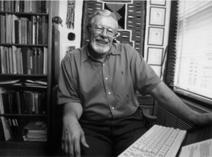

stat4arch
author: Petr Pajdla & Peter Tkáč autosize: true width: 1920 height: 1080
AES_707: Statistics seminar for archaeologists
Seminar 5
type: section
14. 4. 2022
- Reproducibility
- Rmarkdown
- Your datasets
Exercise
type: prompt
Binford’s dataset

# install.packages("binford")
library(binford)
data(LRB)
data(LRBkey)Explore the data
- How many variables are in dataset
LRB? - How many observations?
- What is Binford’s data set
LRBdescribing? In other words, what are the observations and variables? - What is the purpose of
LRBkeydata set? - Is the any correlation between mean size of a family (
famsz) and a size of a single family dwelling (sz1fam)?
Hint: in thecor()function, use only complete observations (argumentuse = "complete.obs") - How does the size of dwellings (
sz1fam) vary in different continents (wldsec)? - Is there any difference in the density of population (
density) and the primary source of food (subsp.1)?
Consider which type of plot (histogram, density, boxplot, scatterplot) will best help you answer the questions. For some questions, there are more possible options.
Reproducible research
type: section
Reproducibility
- Allow other people to build up on your work…
For the findings of a study to be reproducible means that results obtained (…) in a statistical analysis of a data set should be achieved again with a high degree of reliability when the study is replicated.
https://en.wikipedia.org/wiki/Reproducibility

(Marwick et al. 2017; Marwick et al. 2018; https://faculty.washington.edu/bmarwick/)
In your article/thesis/project do:
left: 40%
- Deposit the data in a repository. Zenodo, Figshare etc.
see https://www.re3data.org/ - Include the data and code under an open and permissive license.
https://creativecommons.org/
https://choosealicense.com/ - Include the code for the analysis.
Document your analysis in an Rmarkdown document or in individual scripts. - Document what you are doing and what things mean, create rich metadata.
- Use version control systems (git).
https://github.com/git-guides

Guides
left: 80%
Kieran Healy
The Plain Person’s Guide to Plain Text Social Science
http://plain-text.co/
Ben Marwick
- Marwick, B. 2017: Computational Reproducibility in Archaeological Research: Basic Principles and a Case Study of Their Implementation. Journal of Archaeological Method and Theory 24(2): 424–450. DOI: 10.1007/s10816-015-9272-9.
- Marwick, B., Boettiger, C. and Mullen, L. 2018: Packaging Data Analytical Work Reproducibly Using R (and Friends). The American Statistician 72(1): 80–88. DOI: 10.1080/00031305.2017.1375986.
British Ecological Society
Guides to better science: guide on reproducible code and data management.

RMarkdown
type: section
Packages
# install.packages("rmarkdown")
# install.packages("knitr")
library(rmarkdown)
library(knitr)Rmarkdown - what is it?

Rmarkdown - what is it?

Types of content
- Header
Rcode- Plain text…
YAML header
YAML header separated by --- and bearing info about author, date, type of output…

Code chunks
Code chunks separated by:
```{r chunk-name}
code here…
```

Text
- plain text

Code chunks - place for your code
key shortcut: ctrl + alt + i
input:

output:
a <- 10+5
a[1] 15Code chunks - options I.
- by default, both code and result are shown in the result file. You can change this by adding options into the chunk -
{r, <option>}
Options (examples):
echo = FALSE- result is shown but the code is not shown in the result file
- suitable for e.g. codes of graphs, when you just want to show the graph,…
include = FALSE- neither result nor code are shown in result file
- suitable for e.g. loading packages, basic manipulation of the data,…
Code chunks - options II.
fig.cap = "..."adds caption to the graphicssee the rest of the options at https://rmarkdown.rstudio.com/lesson-3.html
Inline code
input:

output:

Tables using knitr::kable
kable(sipky[1:5,1:10], caption = "DartPoints dataset")| Name | Catalog | TARL | Quad | Length | Width | Thickness | B.Width | J.Width | H.Length |
|---|---|---|---|---|---|---|---|---|---|
| Darl | 41-0322 | 41CV0536 | 26/59 | 42.8 | 15.8 | 5.8 | 11.3 | 10.6 | 11.6 |
| Darl | 35-2946 | 41CV0235 | 21/63 | 40.5 | 17.4 | 5.8 | NA | 13.7 | 12.9 |
| Darl | 35-2921 | 41CV0132 | 20/63 | 37.5 | 16.3 | 6.1 | 12.1 | 11.3 | 8.2 |
| Darl | 36-3487 | 41CV0594 | 10/54 | 40.3 | 16.1 | 6.3 | 13.5 | 11.7 | 8.3 |
| Darl | 36-3321 | 41CV1023 | 12/58 | 30.6 | 17.1 | 4.0 | 12.6 | 11.2 | 8.9 |
Markdown syntax
- presented during live coding
- see https://www.rstudio.com/wp-content/uploads/2015/03/rmarkdown-reference.pdf futher details